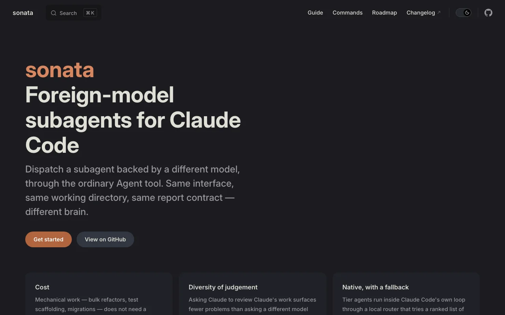
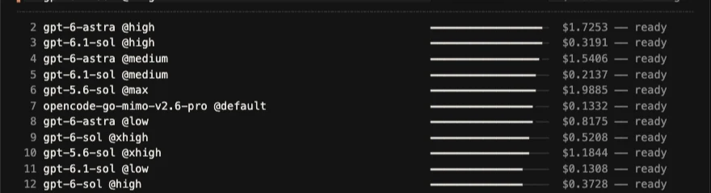

Sonata
Foreign-model subagents for Claude Code.
Claude Code’s subagents always run on Claude. Sonata gives it subagents that run on GPT, DeepSeek, GLM, Kimi or any model you can reach, called through the ordinary Agent tool with the same tools and permission modes.
A local router ranks models per tier and falls back to the next one when a model fails. Open source on npm, in public beta.


sonata agents.